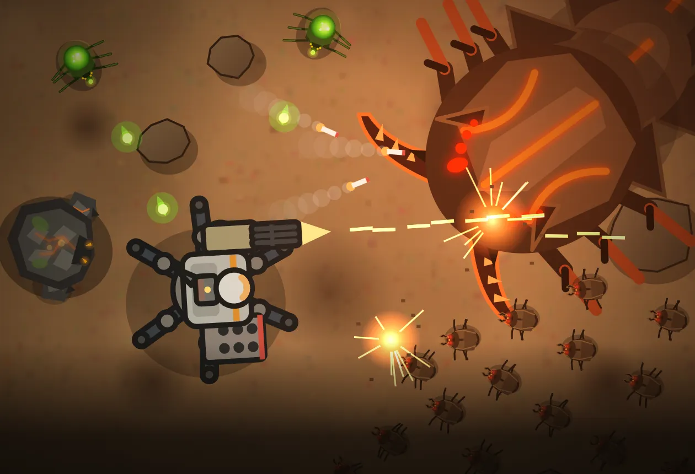

FIELD 01
荒野 第7区画Wasteland Sector 7
見通しの良い赤錆の荒野。横に並ぶ地区を順に制圧していく。ボス戦は全地区が戦場になる。Open, rust-red wasteland with clear sightlines. Take the side-by-side districts one at a time. The boss fight spans every district.
ブラウザで無料プレイFree browser game
荒野機兵戦記WASTELAND MECH CHRONICLES
パーツを組み、回路を刻め。
百の群れの先に、王が待つ。
Build your mech. Wire its mind.
Beyond the swarm, the king awaits.
未知の惑星に降りる、遠隔操作の機兵。その頭脳に刻まれるのは、あなたが組んだ回路だけ。パーツを選んで機体を組み立て、タイルを並べて戦い方をプログラムし、押し寄せる魔物の群れと、その奥に潜むボスに挑みます。 A remote mech, dropped onto an unknown planet. The only thing etched into its mind is the circuit you build. Assemble it from parts, program how it fights by laying out tiles, and send it against the swarms — and the boss lurking beyond them.
無料・インストール不要・PC とスマホのブラウザで遊べます Free · No install · Runs in PC and mobile browsers

― 恒星間探査局 記録 第0号 ―― Interstellar Survey Bureau — Record No. 0 ―
赤錆色の大地。乾いた風。大気の組成は、地球とほぼ同じ。
――あまりにも、似すぎていた。
Rust-red earth. Dry wind. An atmosphere almost identical to Earth's.
——It was far too similar.
先遣調査隊 十二名、降下。
七日目の交信を最後に、記録は途絶えている。
An advance survey team of twelve made the descent.
The record ends with their transmission on the seventh day.
『……地面が、息をしている』"...The ground is breathing."
探索は、遠隔の機兵に委ねられる。
恐れを知らず、命令だけに従う鋼の体。
その頭脳に刻まれるのは、あなたが組んだ回路だけだ。
Exploration is left to remote mechs.
Bodies of steel that know no fear and obey only orders.
Etched into their minds is nothing but the circuit you build.
先遣隊の最後の座標から、救難信号は今も届き続けている。From the advance team's last coordinates, a distress signal is still coming in.
Mech design
手は攻撃、足は機動、胴は防御、頭は制御。組み合わせと回路しだいで、同じパーツでもまったく違う機兵になります。 Arms attack, legs move, the torso defends, the head controls. Depending on how you combine them and wire the circuit, the same parts make an entirely different mech.
スケルトンの6つのジョイントに、頭部A（回路ユニット）・頭部B（出力レギュレーター）・胴体・左右の腕・脚部を装着。重い装甲や武器ほど、積載量の大きい脚が必要です。 Fit six joints on a skeleton frame: Head A (circuit unit), Head B (output regulator), torso, left and right arms, and legs. The heavier your armor and weapons, the more load capacity your legs need.
戦闘中、機兵は自分で考えて動きます。その考え方を決めるのが、回路盤に並べるタイル。「最寄りの敵へ向く」「敵が○m以内にいるか」「左腕で攻撃」――移動・攻撃・制御・判定のタイルをつなぎ、YES／NO で枝分かれさせて、あなただけの戦術を組み上げます。 In battle, the mech thinks for itself — and how it thinks is decided by the tiles on its circuit board. "Face nearest enemy", "Enemy within N m?", "Attack with left arm" — chain movement, attack, control and condition tiles, branch them on YES / NO, and build a tactic that's yours alone.
回路は3つまで保存でき、戦闘中に M キーで切り替えて戦い方を変えられます。 Save up to three circuits and press M mid-battle to switch between them.
胴体のジェネレーターが生む出力を、腕と脚にどう配るか。腕に寄せれば火力が、脚に寄せれば機動力が上がります。レギュレーターしだいで 0〜100% の極端な配分も。戦闘中も回路や Q／E キーで切り替えられます。 How do you split the torso generator's output between arms and legs? Push it to the arms for firepower, to the legs for mobility. Some regulators allow an extreme 0–100% split. You can shift it mid-battle, from a circuit or with Q / E.
倒したエネミーが落とす鉱石――鉄鉱石・酸晶石・岩核――を持ち帰り、パーツを強化 Lv10 まで鍛えます。Lv6 からは腕の弾数が増え、脚はジャンプを覚えます。まれに現れるレアエネミーは、パーツの性能を引き上げるブースター（+1〜+10）を落とすことも。 Haul back the ore that defeated enemies drop — iron, acid crystal, rock core — and upgrade your parts up to Lv10. From Lv6, arms fire extra rounds and legs learn to jump. Rare enemies sometimes drop boosters (+1 to +10) that push a part's performance even further.
Battle
戦場は3つの地区に分かれ、1地区ごとに最大100体の魔物が押し寄せます。すべての地区を掃討したとき、地の底から巨大な生体反応が現れる――。 Each battlefield is split into three districts, and up to 100 creatures pour into each one. Clear them all, and a giant life sign rises from below——
荒野の地中を進む、巨大な甲殻の蟲。追い詰められると全身が赤熱し、激昂する。A colossal armored worm that tunnels beneath the wasteland. Corner it, and its whole body glows red-hot with rage.
大空洞の天井の闇から降りてくる、結晶をまとった巨大蜘蛛。眷属を孵化させ、天井の結晶を降らせる。A giant crystal-clad spider that descends from the darkness of the cavern ceiling. It hatches broods and brings ceiling crystals crashing down.
Fields
見通しの良い赤錆の荒野。横に並ぶ地区を順に制圧していく。ボス戦は全地区が戦場になる。Open, rust-red wasteland with clear sightlines. Take the side-by-side districts one at a time. The boss fight spans every district.
巨大な円形の地下空洞。中心に降下し、地区を掃討するたびに外側の輪へ戦場が広がる。A vast circular cavern. You drop into the center, and the battle spreads to the outer ring with every district you clear.
荒野と洞窟、その最深部を制圧したとき――地の底で、何かが脈打ちはじめる。Conquer the deepest floors of both the wasteland and the cave——and something far below begins to pulse.
Versus
鍛えた機兵をファイルに書き出して、友だちと交換。闘技場「鉄の円環」で、互いの回路だけを頼りに1対1で戦わせます。 Export your mech to a file and trade it with friends. In the Arena "Iron Ring", two mechs fight one-on-one, relying on nothing but their circuits.
How to play
― 降下準備、完了 ―― Descent preparations complete ―